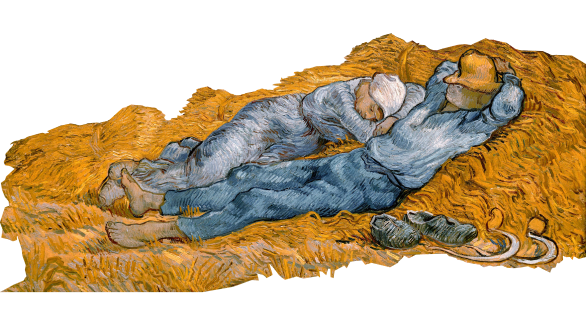
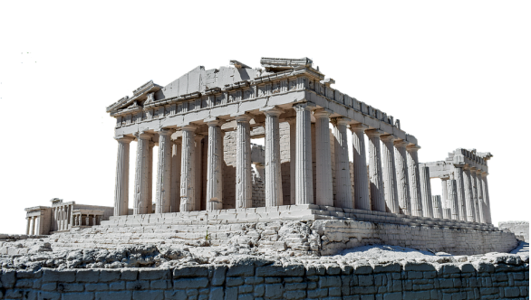
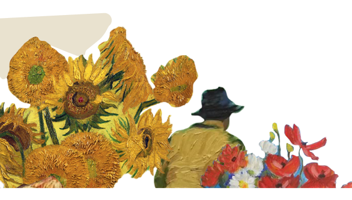

Сервис, который поможет тебе подготовиться на отлично
-
Галлерея
База картин и фактические сведения о них — это именно то, что нужно для сбора материала для ВИ
 -
Подготовка
Конспект, карточки и короткие пробные тесты помогут тебе запомнить всю нужную информацию
 -
Статьи
Интерактивные статьи на интересные темы помогут тебе весело и полезно провести время и найти крутую тему для ВИ
 -
Исследования
Вдохновись примерами визуальных исследований, разберись с критериями на примерах прошлых поколений, а затем легче напиши собственное ВИ

50
страниц конспекта в одном месте — информация курса, которая тебе пригодится
22
карточки с картинами для запоминания всего, что будет в тестах
99
картин по курсу, чтобы скроллить с пользой
Погружайся в мир истории исскуств
Воспользуйся удобной системой фильтрации и смотри только нужные тебе картины
Проверяй свои знания и тренируйся перед предстоящими тестом или контрольной
Вдохновись примерами визуалок, а потом сам делись своим отличным результатом
Пора убедиться в том, что история исскуств — это легко и весело!
Анна, 18 лет
ВШЭ, Дизайн и программирование
Мне нужно было найти примеры визуалок, потому что формат очень непонятный. В поисках примеров зашла сюда. Заодно получилось подобрать тему из-за случайно увиденной статьи :)
Олег, 19 лет
ВШЭ, Дизайн и программирование
К контрольным нормально подготовиться вообще сложно, но систематизация реально помогает справиться с разрозненностью материала и не париться так сильно.
Елизавета, 17 лет
ВШЭ, Дизайн и программирование
Мне часто кажется, что я всё выучила и всё знаю. Но, когда пишу конрольную, понимаю, что много чего не помню. Карточки и интерактивные статьи оченьпомогают проверить себя!
Artistory — медиа-сервис, на котором студенты Школы Дизайна могут найти материалы и помощь по курсу истории искусства. Здесь собраны инструменты и материалы, которые могут поспособствовать более продуктивной подготовке.
Разделы
Картины
Подготовка
Статьи
Исследования
О проекте
HSE Portfolio
Стайлгайд